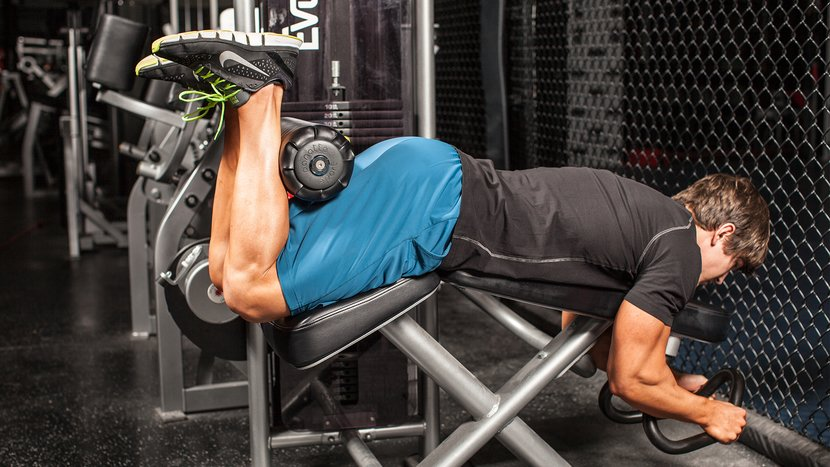
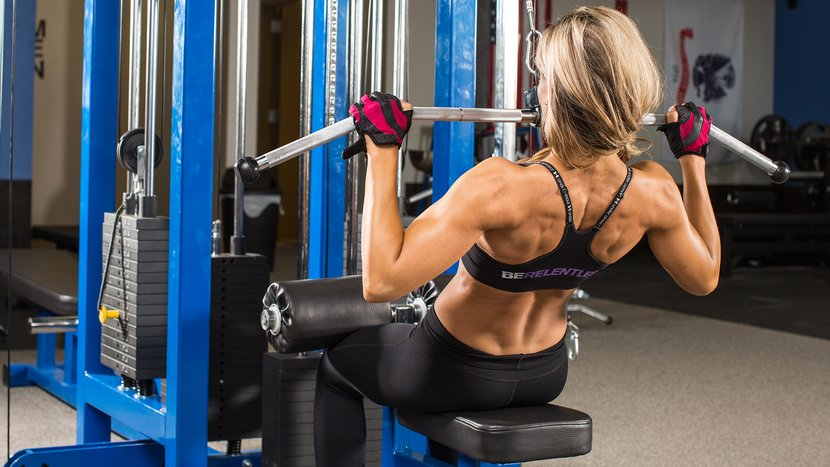
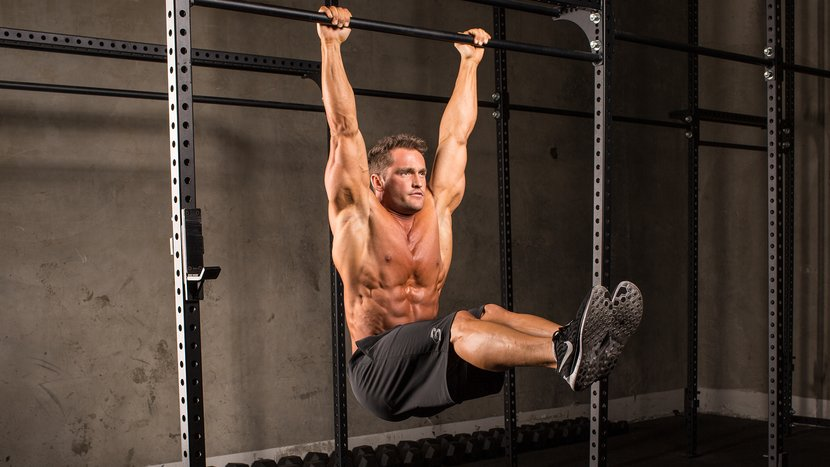
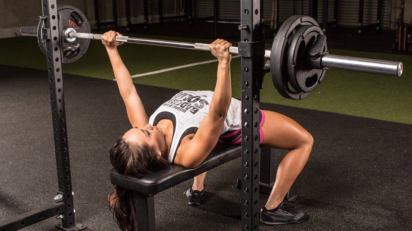
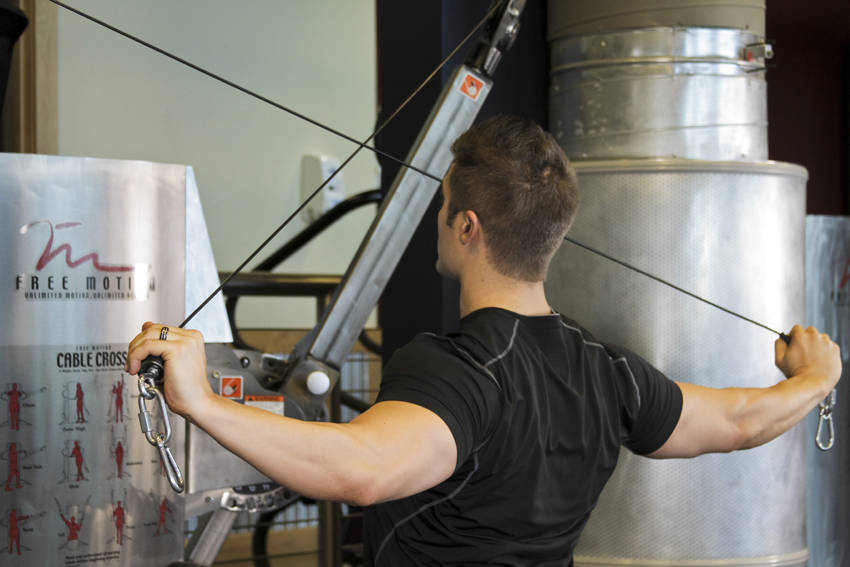
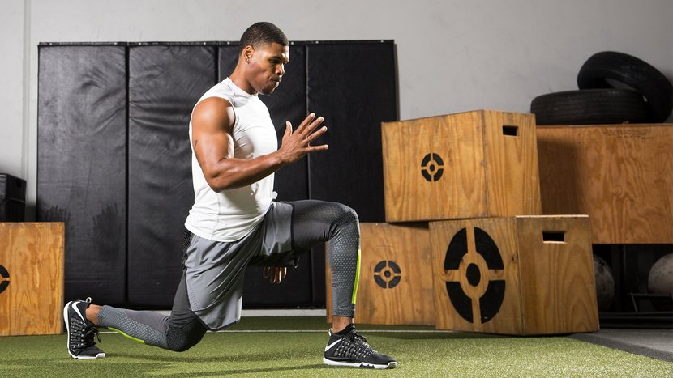
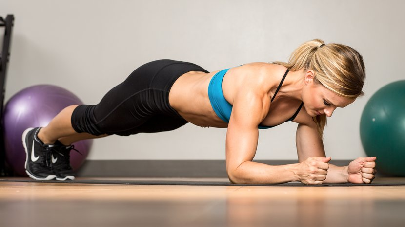
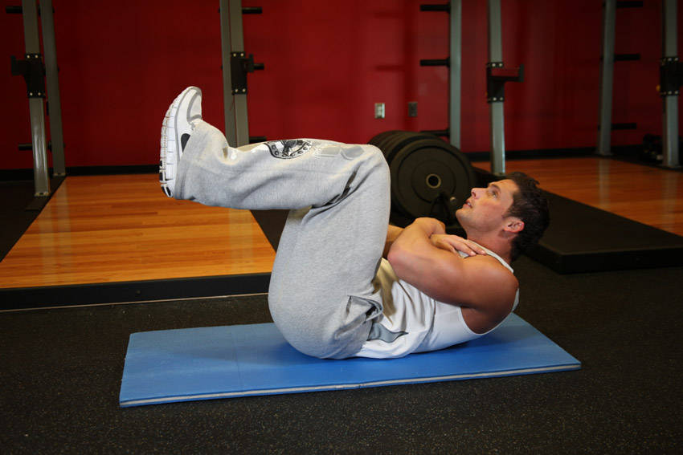
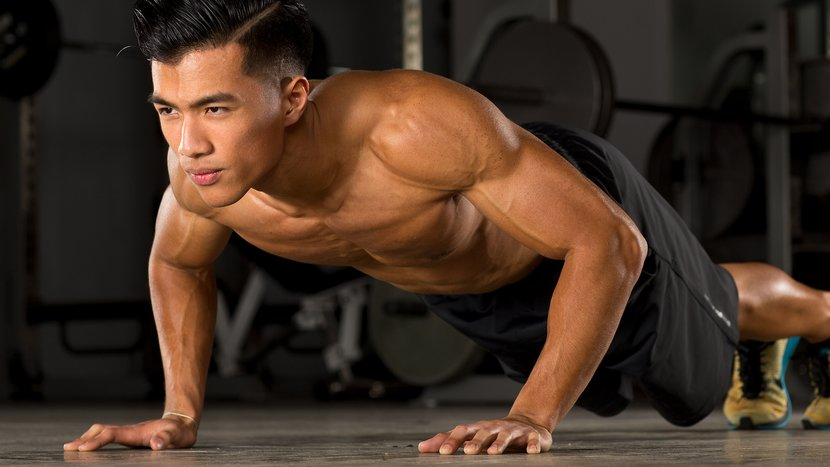
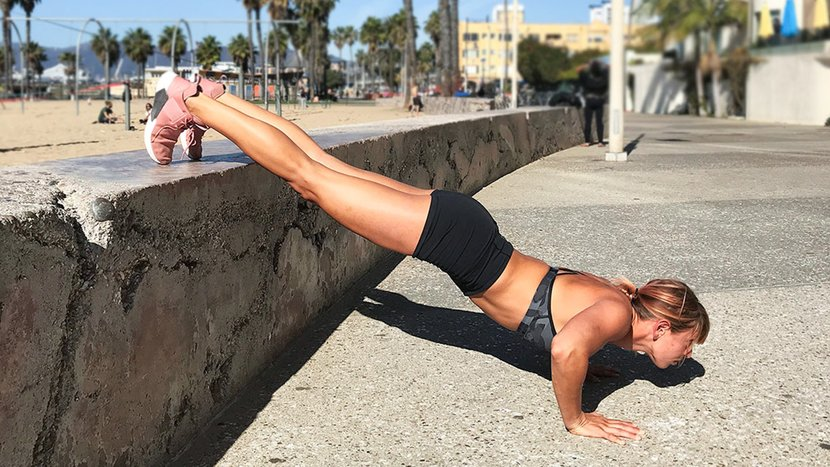

In order to get the best result in regards to muscles mass while working out, focus on only one or two
muscles per workout session. Additionally you only to do around 3 sets consisting of either 6, 8, 10 or 12
reps (A rep is each repetition of a complete motion in an exercise). Alternatively you can also utilize two
exercises side by side with no breaks that stimulate the same muscles. This is called a super set and is
utilized mostly when trying to make the exercise more intense.
Exercises that can be done at the
Leg Workouts

Exercising your legs is important because it’s one of the largest muscle groups on your body. Working out
your legs stimulates your metabolic state which is essential to muscle building and weight loss.
Lying leg curls
Lying leg curls utilize a leg curl machine that can be commonly found in most gyms. Lying leg curls workout
your hamstrings, calves and the back of your legs. The lying leg curls we are focusing on requires the
machine be slightly angled instead of flat, this will create a more advantageous position when working on
your hamstrings and calves.
How to do them
- First adjust the machine so it matches your height.
- Make sure you’re lying down with the back part of your leg on the pad of the lever.
- As you pull your legs toward your butt exhale.
- Inhale when you bring your legs back to their original position.
- Do this for 3 sets consisting of up to 12 reps each with 10 second breaks.
Back Workouts

Exercising your back is important because it’s the foundation block for most other workouts. Training your
back muscles can help with posture and make upper body exercising more effective.
Wide Grip Pull-downs
Wide grip pull-downs require a machine that is very common in most gyms. This exercise works your lower back
and also targets some secondary muscles, biceps and forearms.
How to do them
- Start by facing the lat pulldown machine.
- Grab the grip on either end of the bar so that it’s wider than your shoulder length.
- Pull down the bar up until your chin.
- Extend your arms after its reach your chin into a V=shape.
- Do this for 3 sets consisting of up to 12 reps each with 10 second breaks.
Abdominal Workouts

Exercising your abs is important because it’s considered to be a core muscle. Working on your abs will
increases your stamina, endurance and lessen fatigue.
Hanging Leg Raises
Hanging leg raise work out most of the main abdominal muscles as well as some secondary muscles in the hip
and leg. In order to do a hanging leg raise you’ll need a machine or pull-up bar, these are very common in
most gyms.
How to do them
- Grab onto either a pull-up bar or a hanging leg lift machine.
- Raise your legs off the ground.
- Then slowly bring them back down.
- Do this for 3 sets consisting of up to 12 reps each with 10 second breaks.
Chest and Arm Workouts

Exercising your chest muscles is really important because they’re utilized in almost everything we do.
Increasing chest muscles will also help out the surrounding muscle as well, such as shoulders, back and
triceps.
Bench Press
The bench press is a vital chest and arm exercise that requires a bench press and weights that go along with
it, these can be found in almost every gym. The bench press is one of the most beneficial chest exercises
you can do, it also works out secondary muscles such as triceps, back and deltoids.
How to do them
- In order to do a Bench press you first need to set up the weights (use whatever you feel comfortable
with).
- Place your arms shoulder width apart on the bar holding the weights.
- Lift the weights off the rack and bring it down near your chin.
- Push the weights back up and then repeat.
- Do 3 sets of this consisting of up to 12 reps with 10 second breaks.
Shoulder Workouts

Exercising your shoulders is important because they are utilized when working out other muscles such as
chest and back exercises. They also keep an important balance between or rear and front rotator cuff muscles
which allow us to rotate our arm.
Cable Rear Delt Fly
Cable rear delt fly is a great workout to improve posture and create healthy shoulders. In order to do a
cable rear delt fly you will need a machine which are fairly common in most gyms.
How to do them
- First you’re going to set the height of the cable connected to the machine to your shoulders.
- Next grab a hold of each cable with opposite hands
- Extend your hands so that you make a T formation
- Do 3 sets of this consisting of up to 12 reps each with 10 second breaks.
Exercises that can be done at home
Leg Workouts

Lunges
Lunges are an excellent leg exercise to do at home, because you don’t need any equipment and if you do have
some weight they can easily be implemented into the workout. Lunges workout you hamstrings, quads, hips and
glutes, they’re a great exercise to even out muscle imbalances in your body.
How to do them
- Start with both feet hip-width apart.
- Extend one foot outwards and one foot with their knee touching the ground.
- Alternate feet every time you complete a rep.
- Do this for 3 sets consisting of up to 12 reps each with 10 second breaks.
Back Workouts

Plank
Planks are an exercise that requires no equipment and works out your entire back. Planks are a great
exercise that works on posture and improves balance.
How to do them
- Get into the push-up position.
- Then place your elbows down on the ground in a 90 degree angle.
- Lift yourself up hold that position.
- Do this for 3 sets consist of 30 seconds each with 10 second breaks.
Abdominal Workouts

Tuck Crunches
Tuck Crunches are a simple yet effective way to work out abs. They require no equipment making it ideal for
a
home workout and they solely workout your abdominals.
How to do them
- First lie face up on the floor in a sit-up position (with knees bent).
- Raise your legs off the ground
- Then place your arms on your chest in an X formations.
- Lift your body up using your abdominal muscles, but make sure your feet is not touching the ground.
- Do 3 sets of these consisting of up to 12 reps each with 10 second breaks.
Chest and Arm workouts

Push-ups
Push-ups are an excellent home workout that requires no equipment and workouts almost every muscle,
primarily the chest and arms. This is one of the fastest and most effective home workouts you can do to
gain muscle or burn fat.
How to do them
- Place your arms shoulder width apart in a plank formation.
- Then place both palm on the ground and remove your elbows from the ground.
- Push-up off the ground and then slowly bring yourself back to the original position.
- Make sure your back is straight and you aren’t putting your butt in the air.
- Do 3 sets of this consisting of up to 12 reps with 10 second breaks.
Shoulder

Elevated Push-up
Elevated push-up is a regular push-up with the difference being that your feet are slightly elevated . This
is a little more challenging that a regular push-up and emphasizes the shoulder muscles. This requires no
equipment except for something that can elevate you legs, such as a chair or a couple books.
How to do them
- Place your arms shoulder width apart in a plank formation with your legs elevated
- Then place both palm on the ground and remove your elbows from the ground.
- Push-up off the ground and then slowly bring yourself back to the original position.
- Make sure your back is straight and you aren’t putting your butt in the air.
- Do 3 sets of this consisting of up to 12 reps with 10 second breaks.